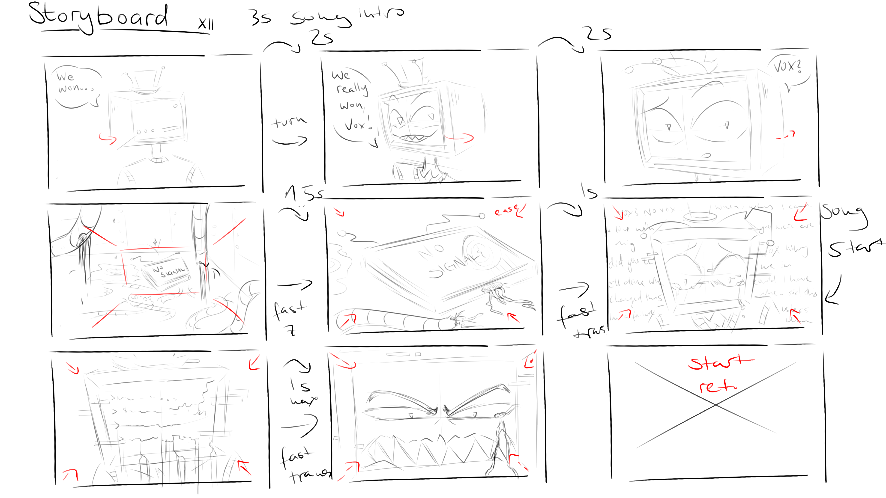
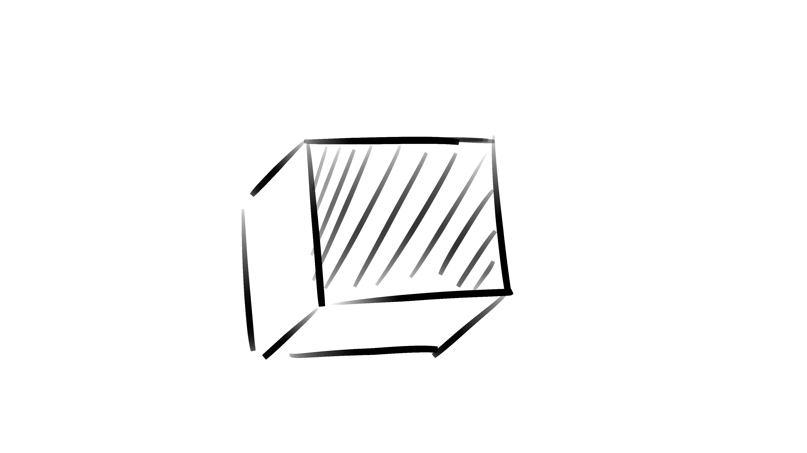

Animationstests: Vox und Vincent
Storyboard

Bevor ich mit der Animation beginne, erstelle ich einen Entwurf oder ein Storyboard, um meine Vorstellung zu visualisieren.
Soll die Animation im Takt eines Liedes sein, zähle ich die Takte und entscheide anhand dessen, wie schnell oder langsam die Bewegungen oder Schnitte sein sollen. In Rot oder einer anderen leuchtenden Farbe füge ich Notizen hinzu oder zeichne Aktionen wie sanfte Übergänge, Zooms, harte Schnitte usw. als spätere Referenz.
Erster Entwurf

Nach dem Storyboard beginne ich direkt mit dem Skizzieren. In diesem Beispiel war ich etwas voreilig und habe versucht, die ersten drei Panels des Storyboards ohne Skizzen oder Bewegungsrichtlinien zu animieren, was zu einigen seltsamen Bewegungen führte, die mir letztendlich nicht gefielen.
Neustart und Neuaufbau

Ich habe einen Schritt zurück gemacht und eine Vorlage von Grund auf neu erstellt, um der Kopfbewegung eine solide Grundlage zu geben.
Zum Glück hat die dargestellte Figur einen quadratischen Kopf, was die Erstellung dieser Vorlage ungemein erleichterte.
Zur besseren Übersicht habe ich die Rückseite schraffiert und die Vorderseite mit einem X markiert, um die beiden Seiten zu unterscheiden und mir die Arbeit zu erleichtern. Ausserdem habe ich der Bewegung mehr Schwung verliehen, damit sie lebendiger und menschlicher wirkt.
Die Figur

Nachdem die Bewegungsabläufe eine solide Grundlage hatten, habe ich die Merkmale der Figur ausgearbeitet. Ich habe zahlreiche Referenzen aus dem Charakterdesign verwendet, um sicherzustellen, dass die Figur präzise gezeichnet ist und schnell wiedererkannt werden kann.